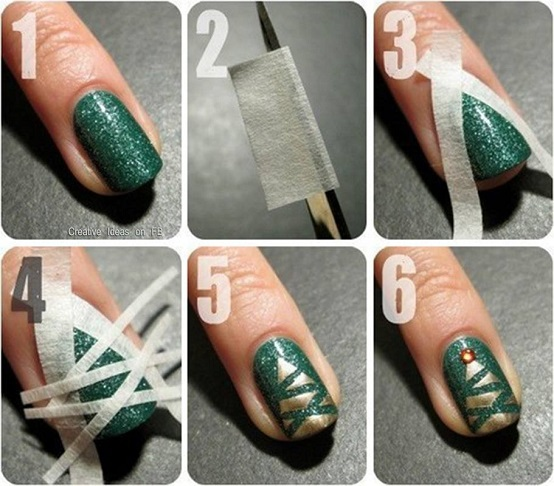

Paso 1: Aplica una capa de esmalte color beige en todas las uñas.
Paso 2: Con un esmalte rojo pinta la parte superior de tu uña.
Paso 3: Donde se ve la división de ambos esmaltes coloca una línea blanca haciendo ondulaciones.
Paso 4: Debajo de la línea blanca contornea el espacio de tal manera que quede trazado un medio circulo en el centro de la uña.
Paso 5: Dibuja dos puntitos negros que asemejen unos ojitos.
Paso 6: Dibuja con esmalte rosa una boquita en cada esquina del medio circulo formado en la uña.
Paso 1: Aplica una capa de esmalte color blanco en la uña.
Paso 2: Marca una línea de esmalte verde dejando libre la punta de la uña.
Paso 3: Rellena la línea verde hacia arriba disminuyendo el tamaño de tal manera que quede formado un triángulo.
Paso 4: Dejar que seque el esmalte.
Paso 5: Pintar puntitos de colores dentro del triángulo.
Paso 6: Dibujar una estrella en la punta del triángulo y colocar una capa de esmalte transparente para dar brillo.
Paso 1: Aplica una capa de esmalte color beige en la uña.
Paso 2: En la parte superior pintar la punta con esmalte rojo.
Paso 3: Traza dos líneas con esmalte negro como se ve en la imagen.
Paso 4: Rellenar con esmalte rojo la figura trazada en el paso anterior.
Paso 5: En la punta de la figura trazada en el paso 3 poner un punto y donde se dividen los dos esmaltes trazar una nubecita con esmalte blanco.
Paso 6: Rellenar el punto y la nubecita con esmalte blanco.
Paso 7: En las partes blancas colocar esmalte con brillos plateados y cuando seque, aplicar una capa de esmalte transparente para darle brillo.

Paso 1:Aplicar una capa de esmalte color verde bandera brilloso.
Paso 2: Cortar tiras de cinta que utilizaremos para formar la figura en la uña.
Paso 3: Pegar la cinta en la uña de tal manera que quede un triángulo.
Paso 4: Colocar en la uña tiras de cinta en diferentes direcciones como se ve en la imagen.
Paso 5: El espacio que queda entre las cintas rellenarlas con esmalte dorado.
Paso 6: Colocar una pequeña estrella en la punta del árbol.
Paso 1:Aplicar una capa de esmalte azul claro en la uña.
Paso 2:: Dejar una parte de la uña con un esmalte de color azul más fuerte.
Paso 3:Pintar la punta de la uña con esmalte blanco pero que la línea no quede derecha por completo.
Paso 4:En una esquina de la uña trazar una línea azul marino.
Paso 5:Trazar más líneas en las mismas que fueron trazadas pero perpendicules a ellas como se muestra en la imagen.
Paso 6:Hacemos lo mismo pero en la otra esquina de la uña pero ahora con esmalte blanco.
Paso 7:Pintamos puntitos blancos en la parte azul de la uña y aplicamos una capa de esmalte transparente para dar brillo.
Paso 1:Aplica una capa de esmalte color azul claro un poco desvanecido en la uña. Con esmalte blanco pintamos una cruz grande en el centro, con 3 líneas.
Paso 2:Ahora antes de llegar a las puntas de cada una de las líneas, pintamos pequeñas líneas perpendiculares cómo se muestra.
Paso 3:Después en cada una de las puntas de las líneas ponemos un puntito pequeño.
Paso 4:Se hace lo mismo en el centro; enseguida de donde dibujamos las líneas pequeñas.
Paso 5:Para finalizar colocar un punto con esmalte negro en el centro de la figura.
Paso 6:Ahora podemos repetir el procedimiento para todas las uñas y aplicamos esmalte transparente para dar brillo.